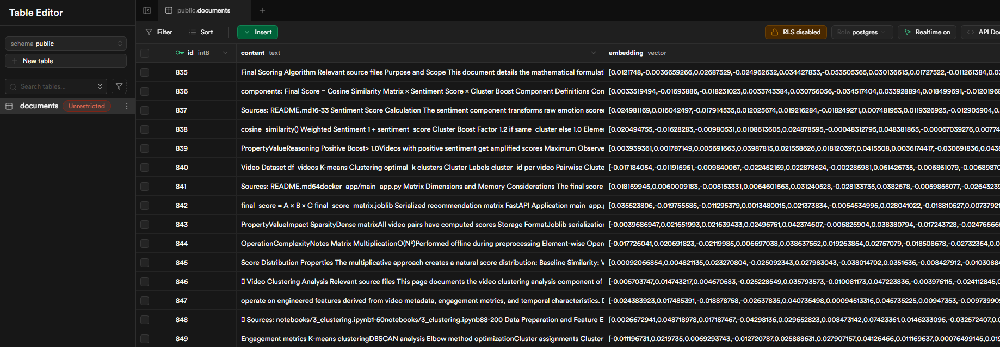
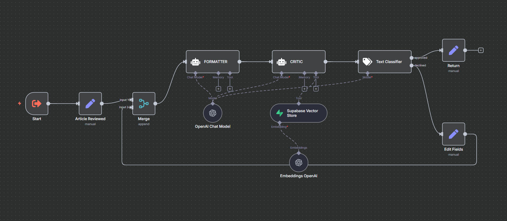

From Telegram prompt to structured, sourced article — grounded in your own documents
Producing consistent, high‑quality content at speed is hard. Manual workflows are slow, unstructured, and consume valuable review time. This project solves that using Retrieval‑Augmented Generation (RAG) and low‑code orchestration.
Solution
Fully automated pipeline: a single prompt becomes a publication‑ready article. It grounds generation in internal documents (vector store retrieval) and returns structured JSON with citations and quality flags.
One workflow. One prompt. Structured, sourced content — in seconds.
This system is composed of modular steps orchestrated via n8n, integrating Supabase (PostgreSQL + vector embeddings), LangChain, and OpenAI GPT‑4o‑mini. Each stage is optimized for memory handling, content grounding, and structured output formatting.
Ingestion (Supabase Preload)
Internal documents (Markdown, PDFs, HTML exports, knowledge articles) are normalized and chunked with a recursive TextSplitter (1000 token chunks, 200 overlap) before any prompt arrives.
Each chunk is embedded via text-embedding-3-small and inserted into a Supabase table with columns: id, content, tokens, embedding (vector(1536)), filename, section, updated_at.
Embedded document chunks stored in Supabase (vector(1536)).
Vector Store (Supabase) setup:
Extension: enable pgvector → CREATE EXTENSION IF NOT EXISTS vector; (adds vector type + similarity operators)
Table:documents stores each chunk + metadata (jsonb) incl. embedding vector(1536)
Embedding model: OpenAI text-embedding-3-small → 1536‑dim vector stored in embedding
We turn documents into vectors once, then a function handles semantic searches for every user prompt.

Supabase view – vectors pre‑computed for fast semantic retrieval.
Prompt Collection (Telegram)
User sends a message to a Telegram bot via the Telegram Bot API. Each prompt is associated with a session using the unique chat_id, enabling memory persistence across turns.
Prompt captured via Telegram (session anchored by chat_id).
Retrieval, Prompt Conditioning & Draft Generation
The prompt is embedded (1536‑dim, OpenAI text-embedding-3-small)—the same space used for stored chunks. A pgvector similarity search (embedding <-> :prompt_embedding) yields the most relevant context beyond keywords.
Keep top 8: optional source / recency filters; metadata preserved for citations.
SELECT content, metadata
FROM documents
ORDER BY embedding <-> :prompt_embedding
LIMIT 8;
Retrieved context from the vector store is injected into a predefined prompt (sections, tone, citation style, missing‑data notes) to produce the first draft. Simple memory ensures follow‑ups refine instead of restart.
AI Agent Simple Memory for chat history and Supabase Vector Store for info retrieval.
LangChain LLMChain calls GPT‑4o‑mini, returning one JSON string validated against a schema; on mismatch a controlled reprompt path triggers (capped retries).
Draft Review (HITL)
The first JSON draft (summary + section outline) is returned to Telegram for feedback. A lightweight classifier decides whether it is approved or needs revision:
If approved: Draft is frozen and moves directly to Format & Quality Validation.
If suggested improvements: Classifier flags revision → Revision Agent regenerates using (prompt + prior draft + structured feedback) and sends the new version back here.
Draft outline reviewed: approve or provide revision notes.
Format & Quality Validation
After human approval the draft enters an automated loop orchestrated by two AI agents:
Quality / Critic Agent: checks JSON schema, citation coverage, length & tone targets, and flags missing evidence.
If a check fails, only the affected sections are regenerated, then re‑evaluated until both pass (or a safety limit). Result: consistent, publish‑ready content without extra manual polishing.
The approved draft is sent to the Formatter & Critic agents for final checks.

Formatter & Critic Workflow: schema check, style normalization, rule enforcement.
Final Review (Second HITL)
The near‑final article is sent to the reviewer for approval or last comments (same pattern as the first HITL). If revisions are requested, a constrained regeneration loop runs until approval or a max attempt cap. The final article is delivered via Telegram once approved.
Final human sign‑off before distribution.
Key Results
90% time reductionvs manual drafting
Consistent qualitypublish‑ready structure
~60s turnaroundusable draft for non‑technical users
Tech Stack
PythonLangChainOpenAI GPT‑4o‑miniSupabasePostgreSQLpgvectorEmbeddingsRAGn8nTelegram Bot API
Demo & Reuse
Demo‑ready, adaptable base for content automation, documentation generation, and internal knowledge assistants.